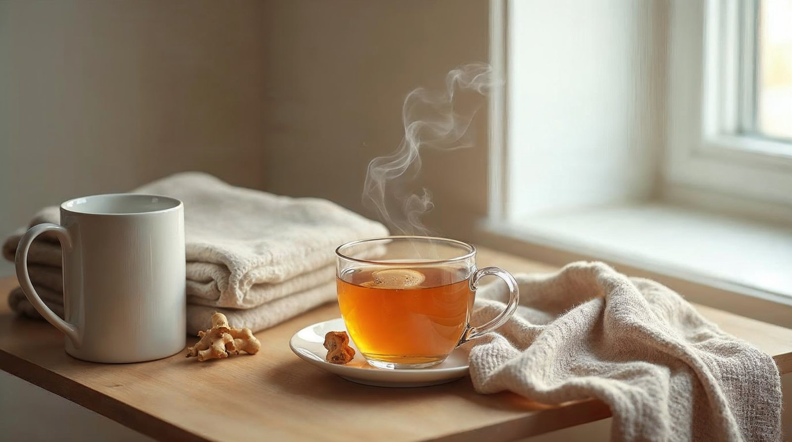
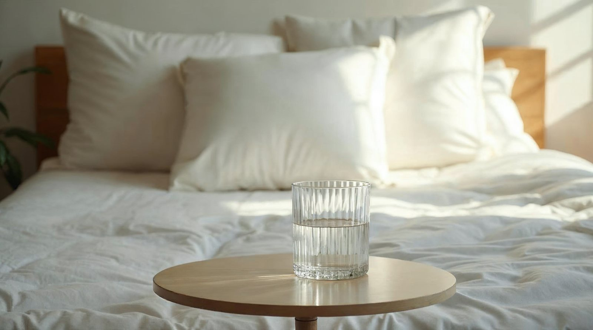
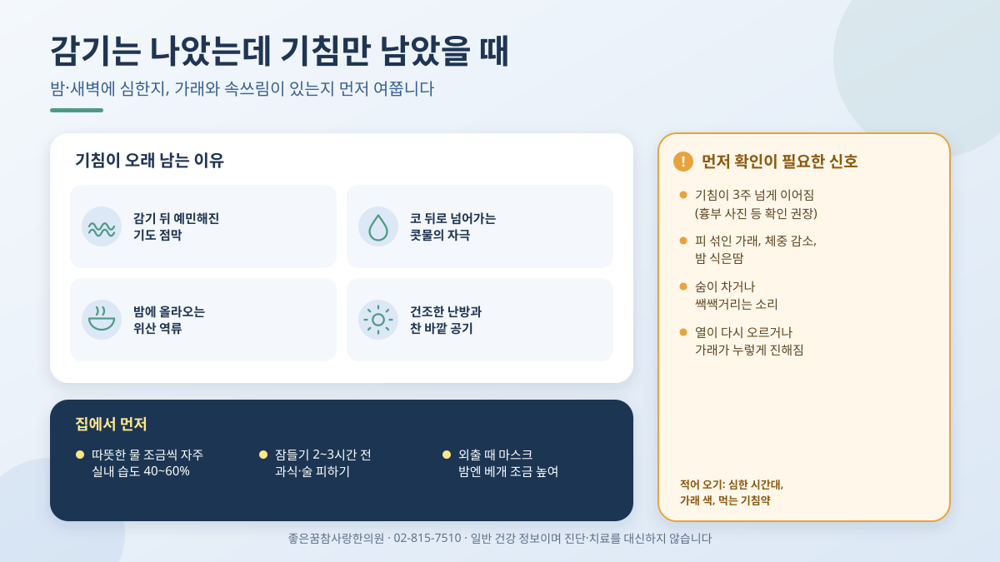

이종호 한의사 감수좋은꿈참사랑한의원 대표원장 (한의사 면허번호 19769)발행 2026-11-23 · 수정 2026-11-26
이 글의 차례
- 왜 이런 불편이 생길 수 있나요
- 비슷해 보이는 기침과는 어떻게 구분하나요?
- 먼저 이렇게 여쭙니다
- 일상에서 먼저 해 볼 수 있는 것
- 목을 아끼는 하루는 어떻게 보낼까요?
- 상황별 예시
- 스스로 점검해 보세요
- 한의학에서는 오래가는 기침을 어떻게 바라보나요?
- 자주 하는 오해는 무엇인가요?
- 밤 기침을 줄이는 잠자리는 어떻게 만들까요?
- 담배를 피운다면 무엇을 함께 볼까요?
- 목에 도움이 되는 음료는 무엇이 있을까요?
- 운동은 언제 다시 해도 될까요?
- 한의원에서 함께 살필 수 있는 경우
- 첫 진료는 어떤 순서로 진행되나요?
- 다시 오셨을 때는 무엇을 비교하나요?
- 얼마나 지켜보고 언제 상담할까요
- 이렇게 기록해 오시면 상담이 쉬워집니다
- 이런 증상은 먼저 확인이 필요합니다
- 함께 읽으면 좋은 글
감기가 나은 뒤에도 기침이 몇 주 남는 것은 감기로 예민해진 기도가 회복되는 데 시간이 걸리는 경우가 많아, 기침이 이어진 기간과 함께 오는 증상부터 확인합니다.
열과 콧물은 다 나았는데 목이 간질거리며 마른기침이 이어진다는 분이 많고, 강의나 상담처럼 말을 많이 하는 일을 하시는 분들께서는 특히 불편해하십니다. 밤에 기침으로 깨다 보니 낮에도 피곤이 쌓인다는 말씀도 자주 듣습니다.
왜 이런 불편이 생길 수 있나요
- 감기를 앓고 나면 기도 점막이 한동안 예민해져 찬 공기나 말하기에도 기침이 날 수 있습니다.
- 코 뒤로 넘어가는 콧물이 목을 자극해 기침이 이어지는 경우가 있습니다.
- 위산이 올라오는 역류가 밤 기침을 키우기도 합니다.
- 한의학에서는 회복이 더딘 몸 상태와 잠, 피로도 함께 살핍니다.
- 건조한 난방과 찬 바깥 공기가 번갈아 닿는 겨울에는 기침이 더 오래가는 경우가 있습니다.
- 기침을 하면 목이 더 자극받고, 자극받은 목이 다시 기침을 부르는 고리가 생기기도 합니다.
감기 바이러스가 지나간 자리의 기도 점막은 겉이 살짝 벗겨진 상처와 비슷합니다. 새 점막이 자리 잡기까지 몇 주가 걸리는데, 그동안은 찬 공기나 먼지, 말소리 같은 작은 자극에도 기침 반사가 쉽게 튀어나옵니다.
그래서 감기 뒤 기침은 감기가 덜 나아서라기보다 회복 중인 기도가 예민해진 상태로 보는 경우가 많습니다. 이 시기에 잠이 부족하거나 목을 많이 쓰면 회복이 더뎌질 수 있습니다.
비슷해 보이는 기침과는 어떻게 구분하나요?
- 목 뒤로 무언가 넘어가는 느낌이 있고 헛기침이 잦다면 코에서 넘어가는 콧물(후비루)이 함께 있는 경우가 많습니다.
- 속쓰림, 신물, 목에 무언가 걸린 느낌이 있고 누우면 심해진다면 위산 역류와 관련된 기침을 생각해 봅니다.
- 찬 공기나 운동 뒤에 기침이 터지고 숨 쉴 때 쌕쌕거리는 소리가 난다면 기도가 좁아지는 천식 계열의 기침일 수 있어 내과 확인을 권합니다.
- 혈압약을 새로 드시기 시작한 무렵부터 마른기침이 생겼다면 약과의 관련을 처방한 의사와 상의해 보세요. 약은 임의로 끊지 마세요.
이런 모습이 뚜렷하지 않고 감기 직후부터 목이 간질거리는 마른기침이 서서히 줄어드는 흐름이라면, 회복 중인 기도의 예민함으로 보고 생활 관리와 함께 지켜봅니다.

먼저 이렇게 여쭙니다
- 기침이 낮보다 밤이나 새벽에 더 심한가요?
- 가래가 있나요? 있다면 색은 어떤가요?
- 찬 공기를 마시거나 말을 많이 할 때 더 심해지나요?
- 담배를 피우시거나 주변에 피우는 분이 있나요?
- 누우면 기침이 더 심해지나요?
- 목 뒤로 콧물이 넘어가는 느낌이나 속쓰림이 있나요?
- 숨 쉴 때 쌕쌕거리는 소리가 나거나 숨이 찬 적이 있나요?
일상에서 먼저 해 볼 수 있는 것
- 따뜻한 물을 조금씩 자주 마셔 목을 촉촉하게 하기
- 실내 습도를 40~60%로 맞추기
- 잠들기 2~3시간 전에는 과식과 술 피하기
- 외출할 때 마스크로 찬 공기 막기
- 기침이 심한 밤에는 베개를 조금 높여 자 보기
목을 아끼는 하루는 어떻게 보낼까요?
- 아침: 일어나자마자 미지근한 물 한 컵으로 목을 적시고, 찬 바깥에 나갈 때는 마스크 쓰기
- 일하는 중: 말을 많이 하는 날은 30분에 한 번 물 한 모금, 목소리를 크게 내지 않도록 마이크나 거리 조절하기
- 저녁: 맵고 기름진 음식은 줄이고 식사는 가볍게 하기
- 잠들기 전: 침실 습도를 확인하고, 콧물이 넘어가면 따뜻한 수증기를 잠시 쐰 뒤 눕기
헛기침이 날 것 같을 때는 크게 터뜨리기보다 침을 한 번 삼키거나 물을 한 모금 마셔 보세요. 기침과 자극이 이어지는 고리를 조금씩 줄이는 데 도움이 될 수 있습니다.
상황별 예시
- 예를 들어 하루 종일 강의를 하는 강사라면, 강의 사이 쉬는 시간마다 물을 마시고 마이크를 써서 목소리를 낮추며, 기침이 심한 시간대를 강의 일정과 함께 적어 볼 수 있습니다.
- 예를 들어 밤에 누우면 기침이 시작되고 아침에 목이 칼칼한 경우라면, 늦은 저녁 식사와 잠자리 자세, 침실 습도를 하나씩 바꿔 보며 기침으로 깬 횟수를 비교합니다.
- 예를 들어 찬 바깥에서 따뜻한 실내로 들어올 때마다 기침이 터지는 경우라면, 마스크를 쓰고 출입할 때 천천히 코로 숨 쉬는 습관을 함께 정합니다.
- 예를 들어 아이가 어린이집에서 감기를 옮아 온 뒤 온 가족이 차례로 앓고, 그 뒤 부모님만 기침이 오래 남는 경우라면, 아이를 돌보느라 잠이 짧아지지는 않았는지도 함께 여쭙니다.
스스로 점검해 보세요
- 감기 증상이 끝난 지 2주가 넘었나요?
- 기침 때문에 밤에 두 번 넘게 깨는 날이 많은가요?
- 누우면 기침이 심해지고 속쓰림이나 신물이 있나요?
- 목 뒤로 콧물이 넘어가는 느낌이 자주 드나요?
- 찬 공기나 운동 뒤에 기침이 터지고 쌕쌕거리나요?
- 실내 습도가 30%보다 낮은 날이 많은가요?
해당하는 항목을 기록과 함께 가져오시면 기침이 이어지는 까닭을 어디부터 살필지 정하기 쉽습니다.
한의학에서는 오래가는 기침을 어떻게 바라보나요?
한의학에서는 폐가 몸의 겉과 숨을 맡는다고 보고, 감기를 앓은 뒤 폐의 기운이 지치거나 촉촉함이 모자라면 기침이 오래 남는다고 봅니다. 목이 마르고 가래가 거의 없는 마른기침이라면 건조한 쪽을, 쉽게 지치고 목소리에 힘이 없다면 기운이 떨어진 쪽을 함께 살핍니다.
또 위의 열이나 소화의 부담이 기침과 함께 오는 경우도 있어, 속쓰림과 입맛, 대변을 함께 여쭙습니다. 이렇게 기침의 모양과 몸의 경향을 함께 보면 생활에서 무엇부터 바꿀지 정리하기 쉬워집니다.
자주 하는 오해는 무엇인가요?
- 기침이 오래가면 감기가 덜 나은 것이라 감기약을 더 먹어야 한다는 생각: 감기 뒤 기침은 기도가 회복 중인 경우가 많아, 약을 늘리기 전에 처방한 의사와 상의해 주세요.
- 목을 시원하게 하려면 찬물을 마셔야 한다는 생각: 찬물은 기도를 자극할 수 있어 미지근한 물이 더 편한 경우가 많습니다.
- 헛기침으로 가래를 시원하게 뱉어야 한다는 생각: 세게 헛기침을 하면 목이 더 자극받아 기침이 길어질 수 있습니다.
- 가습기는 오래 켤수록 좋다는 생각: 습도가 너무 높거나 물통이 깨끗하지 않으면 오히려 불편할 수 있어 40~60%를 맞추고 물통을 자주 씻어 주세요.
밤 기침을 줄이는 잠자리는 어떻게 만들까요?
밤 기침은 잠을 끊고, 끊긴 잠은 다시 회복을 늦춥니다. 잠자리를 조금만 바꿔도 밤에 깨는 횟수를 줄이는 데 도움이 될 수 있습니다.
- 베개를 높일 때는 머리만 꺾이지 않도록 등부터 비스듬히 받쳐 상체를 세우기
- 잠들기 전 따뜻한 물 한 모금으로 목을 적시고, 머리맡에도 물 한 컵 두기
- 침실 온도는 너무 덥지 않게 맞추기
- 이불과 베개 커버를 자주 빨아 먼지 줄이기
- 기침으로 깼다면 일어나 앉아 물을 마시고, 천천히 코로 숨을 쉰 뒤 다시 눕기
담배를 피운다면 무엇을 함께 볼까요?
담배 연기는 회복 중인 기도를 계속 자극해 기침을 길게 끄는 경우가 많습니다. 감기 뒤 기침이 이어지는 동안만이라도 개수를 줄이거나 쉬어 보시고, 그 기간의 기침 변화를 기록해 보세요.
함께 사는 가족이 피운다면 집 안과 차 안에서는 피우지 않도록 부탁해 보시는 것도 좋습니다. 담배를 끊으려는 마음이 있다면 그 이야기도 진료 때 함께 나눠 주세요.
목에 도움이 되는 음료는 무엇이 있을까요?
기침이 이어지는 동안에는 목을 촉촉하게 지키는 것이 기본입니다. 미지근한 물을 가장 먼저 권하고, 그 밖에 집에서 쉽게 마실 수 있는 것을 곁들여 볼 수 있습니다.
- 따뜻한 배숙이나 도라지 달인 물처럼 목을 적셔 주는 음료를 조금씩 마시기
- 꿀을 탄 따뜻한 물은 목을 부드럽게 하는 데 도움이 될 수 있습니다(돌이 지나지 않은 아기에게는 꿀을 주지 마세요)
- 커피와 진한 차, 술은 목을 마르게 할 수 있어 줄이기
- 아주 뜨겁거나 아주 찬 음료보다 미지근한 것을 고르기
당뇨가 있거나 드시는 약이 있다면 단 음료와 차는 양을 확인하며 드시고, 궁금한 점은 진료 때 함께 여쭤 주세요.
운동은 언제 다시 해도 될까요?
열이 내리고 기운이 돌아왔다면 가벼운 걷기부터 다시 시작해 볼 수 있습니다. 다만 찬 공기 속에서 숨이 가쁠 만큼 뛰면 예민해진 기도가 자극받아 기침이 터지기 쉽습니다.
겨울에는 실내에서 걷기나 가벼운 스트레칭으로 시작하고, 바깥 운동은 마스크를 쓰고 천천히 몸을 데운 뒤 해 보세요. 운동한 날 밤 기침이 늘었는지 기록해 두면 강도를 조절하기 쉽습니다.

한의원에서 함께 살필 수 있는 경우
- 감기 뒤 기침이 오래 남아 잠을 설치는 경우 목과 호흡, 잠을 함께 살핍니다.
- 몸이 쉽게 지치고 회복이 더딘 편인지 함께 살핍니다.
- 속쓰림이나 신물이 함께 있는 경우 소화도 이어서 여쭙니다.
- 내과나 이비인후과 확인을 받고 큰 이상은 없다고 들었지만 기침과 피로가 이어지는 경우입니다.
좋은꿈참사랑한의원에서는 모든 분께 그렇듯 맥부터 짚으며 기침이 심한 시간대와 생활 환경을 여쭙고, 필요하면 혀(설진)도 살핀 뒤 침이나 한약 상담 등 상태에 맞는 방법을 정합니다. 검사가 먼저 필요해 보이면 내과나 이비인후과를 함께 안내합니다.
첫 진료는 어떤 순서로 진행되나요?
- 모든 분께 그렇듯 맥을 먼저 짚고, 필요하다고 판단되면 혀의 모습도 살핍니다.
- 감기가 시작한 날과 끝난 날, 기침이 심한 시간대, 가래의 색과 양, 누우면 심해지는지를 여쭙습니다.
- 콧물이 목 뒤로 넘어가는지, 속쓰림이나 신물이 있는지, 잠과 입맛, 대변, 실내 환경과 담배 여부도 함께 확인합니다.
- 상태에 맞는 방법과 목을 아끼는 생활에서 먼저 바꿀 것을 함께 정합니다.
드시는 기침약이나 감기약, 혈압약 같은 다른 약이 있다면 이름을 모두 알려 주세요. 한약을 상담할 때는 지금 드시는 약을 먼저 확인합니다.
다시 오셨을 때는 무엇을 비교하나요?
두 번째 진료부터는 기침으로 깬 횟수와 심한 시간대가 어떻게 달라졌는지, 가래의 색과 양이 바뀌었는지 처음 기록과 비교합니다. 목을 아끼는 습관과 잠자리를 얼마나 지킬 수 있었는지도 여쭙습니다.
기침이 줄어드는 흐름이 보이지 않거나 새로운 증상이 생겼다면, 검사를 받았는지 여쭙고 그 결과를 함께 봅니다.
얼마나 지켜보고 언제 상담할까요
- 감기 증상이 끝난 뒤 기침이 서서히 줄어드는 흐름이라면, 목을 아끼고 습도를 맞추며 기록해 볼 수 있습니다.
- 기침으로 잠을 자주 깨거나 줄어드는 흐름이 보이지 않으면 내과 확인과 함께 상담을 받아 보시기를 권합니다.
이렇게 기록해 오시면 상담이 쉬워집니다
- 기침이 시작된 날과 감기 증상이 끝난 날
- 기침이 심한 시간대와 기침으로 깬 횟수
- 가래의 색과 양
- 먹고 있는 기침약, 감기약 이름
- 실내 습도와 가습기 사용 여부
기침 소리를 휴대폰으로 30초쯤 녹음해 오시면 마른기침인지, 가래가 섞인 기침인지 함께 살피기 쉽습니다.
밤마다 기침으로 깨면서도 낮에는 할 일을 해내셨을 테니, 그동안 많이 지치셨을 겁니다. 다음에 오시면 기침으로 깬 밤이 일주일에 며칠이었는지부터 여쭙겠습니다.
이런 증상은 먼저 확인이 필요합니다
- 기침이 3주 넘게 이어지거나 숨이 차는 경우(흉부 사진 등 확인)
- 피 섞인 가래, 이유 없는 체중 감소, 밤 식은땀 중 하나라도 있는 경우
이런 신호가 있으면 한의원보다 가까운 병원이나 응급실을 먼저 찾으세요.
함께 읽으면 좋은 글
- 2주 넘게 기침이 이어질 때는 언제 병원 검사를 받아야 하나요?
- 콧물이 목 뒤로 넘어가 자꾸 헛기침이 나는 후비루는 왜 생기고 어떻게 살피나요?
- 마른기침과 가래 섞인 기침은 어떻게 구분해서 기록하나요?

여쭙는 것
- 기침이 낮보다 밤이나 새벽에 더 심한가요?
- 가래가 있나요? 있다면 색은 어떤가요?
- 찬 공기를 마시거나 말을 많이 할 때 더 심해지나요?
생활에서 해 볼 것
- 따뜻한 물을 조금씩 자주 마셔 목을 촉촉하게 하기
- 실내 습도를 40~60%로 맞추기
- 잠들기 2~3시간 전에는 과식과 술 피하기
한의원에서 함께 살필 것
- 감기 뒤 기침이 오래 남아 잠을 설치는 경우 목과 호흡, 잠을 함께 살핍니다.
- 몸이 쉽게 지치고 회복이 더딘 편인지 함께 살핍니다.
- 속쓰림이나 신물이 함께 있는 경우 소화도 이어서 여쭙니다.
먼저 확인이 필요한 신호
- 기침이 3주 넘게 이어지거나 숨이 차는 경우(흉부 사진 등 확인)
- 피 섞인 가래, 이유 없는 체중 감소, 밤 식은땀 중 하나라도 있는 경우
한눈에 보는 표
| 구분 | 핵심 |
|---|---|
| 여쭙는 것 | 기침이 낮보다 밤이나 새벽에 더 심한가요? 가래가 있나요? 있다면 색은 어떤가요? |
| 생활에서 해 볼 것 | 따뜻한 물을 조금씩 자주 마셔 목을 촉촉하게 하기 실내 습도를 40~60%로 맞추기 |
| 한의원에서 함께 살필 것 | 감기 뒤 기침이 오래 남아 잠을 설치는 경우 목과 호흡, 잠을 함께 살핍니다. 몸이 쉽게 지치고 회복이 더딘 편인지 함께 살핍니다. |
| 먼저 확인이 필요한 신호 | 기침이 3주 넘게 이어지거나 숨이 차는 경우(흉부 사진 등 확인) 피 섞인 가래, 이유 없는 체중 감소, 밤 식은땀 중 하나라도 있는 경우 |
자주 묻는 질문
기침약을 계속 먹어도 되나요?
오래 드셔야 한다면 처방한 의사와 상의하시는 것이 좋습니다.
한약과 기침약을 함께 먹어도 되나요?
먹고 있는 약을 모두 알려 주시면 함께 확인한 뒤 상담합니다. 약은 임의로 끊거나 겹쳐 먹지 마세요.
임신 중인데 기침이 오래가요. 상담받아도 되나요?
임신 중이라면 먼저 말씀해 주세요. 드시는 약을 확인하고, 산부인과와도 함께 상의하시도록 안내합니다.
기침이 남아 있는데 다른 사람에게 옮기지 않을까요?
감기 뒤 남은 기침은 기도가 예민해진 경우가 많지만, 기침이 잦은 동안에는 마스크를 쓰고 손을 자주 씻는 편이 주변 사람에게도 마음이 편합니다.
좋은꿈참사랑한의원은 재진 때 지난번 이야기부터 이어서 여쭙니다. 진료시간과 예약은 오시는 길에서 확인하세요.
어디서 상담받을 수 있나요?
좋은꿈참사랑한의원은 서울 동작구 만양로2길 2 신성빌딩 3층·5층(서울 동작구 상도동, 7호선 상도역 3번 출구 근처)에 있습니다. 한의사 3명(이종호 대표원장, 조영기 수석진료원장, 정원영 진료원장)이 진료합니다. 진료시간은 평일 09:30~20:00(점심 13:00~14:00), 토·일·공휴일 09:30~15:00이며, 방문 전 전화로 확인을 권합니다. 예약은 네이버 예약, 카카오톡 상담, 전화 02-815-7510로 받습니다.
이 글은 일반적인 건강 정보이며 개인의 진단이나 치료를 대신하지 않습니다. 증상이 있거나 복용 중인 약이 있다면 진료를 통해 확인하세요. 치료 효과는 개인마다 다를 수 있습니다.
작성 기준: 일반적으로 알려져 있는 건강 정보를 참고해 정리했습니다(대표원장 감수). 증상 기록은 1~2주 동안 하루 1회, 비슷한 시간에 적어 오시면 지난 상태와 비교하기 쉽습니다.